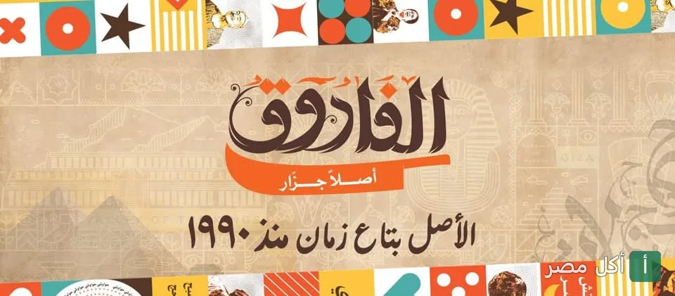

عرض الفاروق
٢ سندوتش كفتة + ٢ سجق + ٢ شيش + سلطة + طحينة
160 جنيه

الأسعار بالجنيه المصري من صفحة أكل مصر (آخر تحديث معلن: ١٧ أكتوبر ٢٠٢٦). أكد السعر مع المطعم عند الطلب.
الأصناف والأسعار من صفحة أكل مصر المنشورة. أكد تفاصيل طلبك والسعر مع المطعم عند الاتصال.